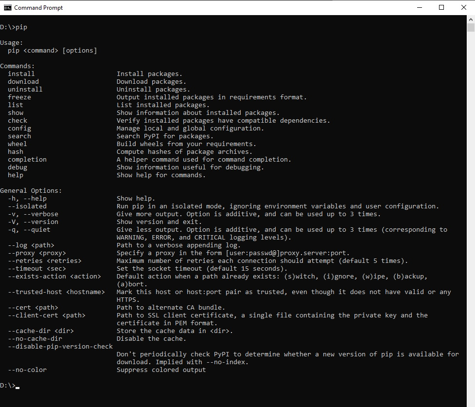
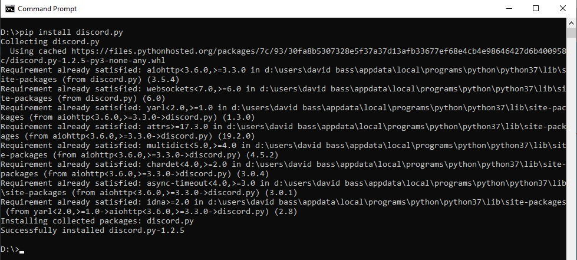
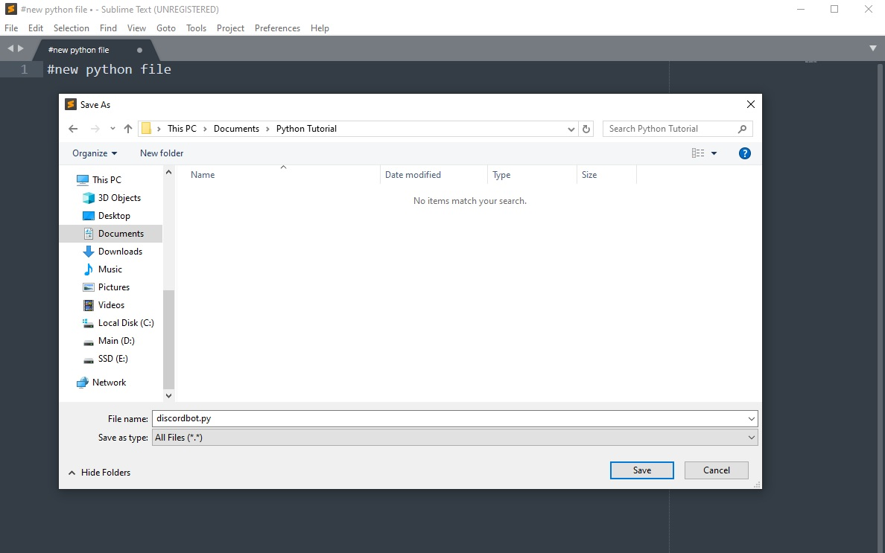

Home
Requirements:
Step 1: Getting everything ready
Open up a command prompt - aka console - and make sure you have pip installed.

If you don't have pip installed, then run these commands in console:
curl https://bootstrap.pypa.io/get-pip.py -o get-pip.py
python get-pip.py
Install discord.py by typing in to console 'pip install discord.py'
Note: this tutorial was created while discord.py-1.2.5 is the latest version

Step2: Making the file
Using your text editor of choice, create a new python file.
ie. Save As > discordbot.py
Note: make sure to save as 'All Files (*.*)'
